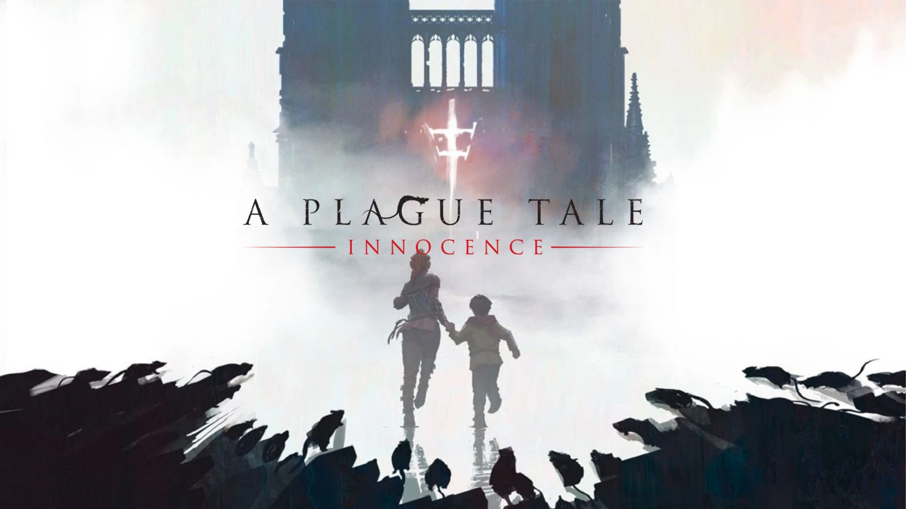

.jpg)
.jpg)
Grand Theft Auto 5
Grand Theft Auto V (GTA 5) is an open-world action-adventure game set in the vibrant city of Los Santos, inspired by Southern California. Players control three main protagonists—Michael, Franklin, and Trevor—each with unique abilities, as they embark on heists and missions in a detailed and immersive world filled with diverse activities.
The game's multiplayer mode, GTA Online, expands the experience by allowing players to create their own characters and engage in cooperative missions, competitive races, and various mini-games. Regular updates introduce new content, keeping the gameplay fresh and exciting. Together, GTA 5 and GTA Online offer endless opportunities for action and adventure in a captivating open world.
.jpg)
A Plague Tale Series
A Plague Tale: Innocence is a gripping action-adventure game set in 14th-century France during the Black Death. Players follow the harrowing journey of Amicia and her younger brother Hugo as they navigate a world plagued by war, disease, and supernatural forces. With stealth mechanics and puzzle-solving elements, the siblings must evade the Inquisition and swarms of rats while uncovering dark secrets about their past. The game's emotional storytelling and immersive atmosphere create a powerful experience, showcasing the bond between the siblings amidst overwhelming adversity.
A Plague Tale: Requiem, the sequel, continues Amicia and Hugo's journey as they flee to new lands in search of a cure for Hugo’s mysterious affliction. Set against a backdrop of lush landscapes and vibrant cities, the game expands on the original's mechanics, introducing new abilities and challenges. Players must navigate both human and supernatural threats while further exploring themes of sacrifice, survival, and the impact of trauma. With its stunning visuals, enhanced gameplay, and deep narrative, Requiem builds on the foundation laid by Innocence, delivering an unforgettable tale of hope and despair.
.jpg)
Red Dead Redemption 2
Red Dead Redemption 2 is my favorite story game of all time, immersing players in the late 1800s American frontier. You take on the role of Arthur Morgan, a member of the Van der Linde gang, navigating a beautifully detailed world filled with stunning landscapes and dynamic characters.
What sets this game apart is its profound storytelling. The narrative explores themes of loyalty, morality, and the inevitable decline of the outlaw way of life. Arthur’s journey is deeply moving, showcasing his internal struggles and the complexities of his relationships within the gang.
The game’s attention to detail is remarkable, with realistic interactions and a vast open world that invites exploration. From hunting and fishing to engaging with the vibrant characters, every moment feels alive. Red Dead Redemption 2 is not just a game; it’s an unforgettable experience that leaves a lasting impact.